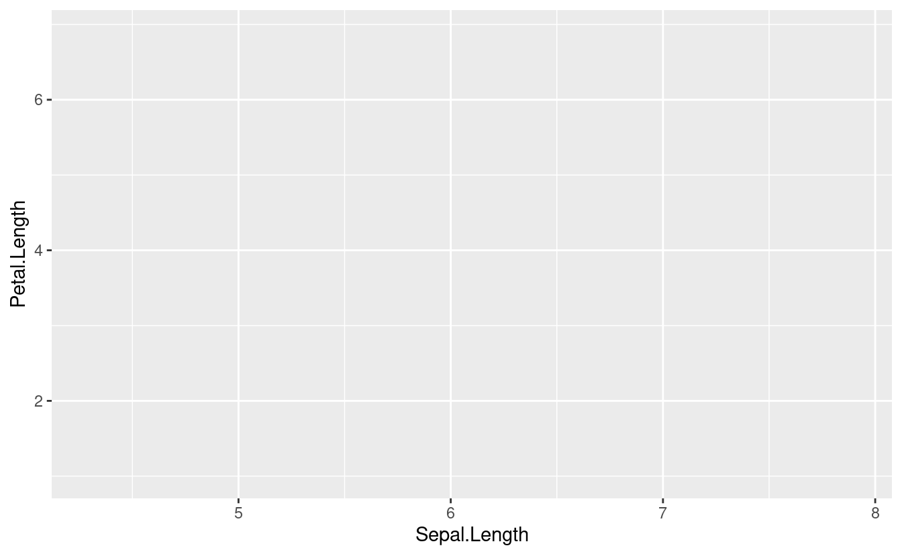
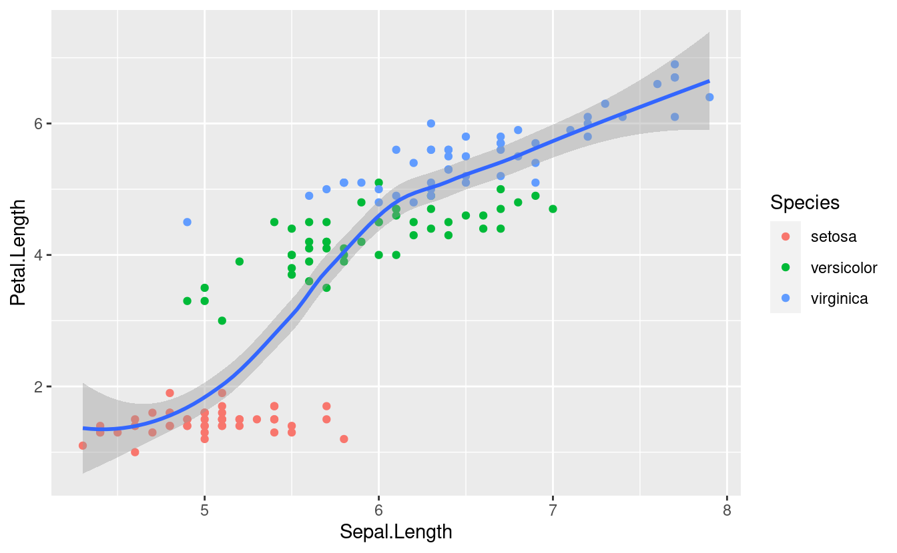
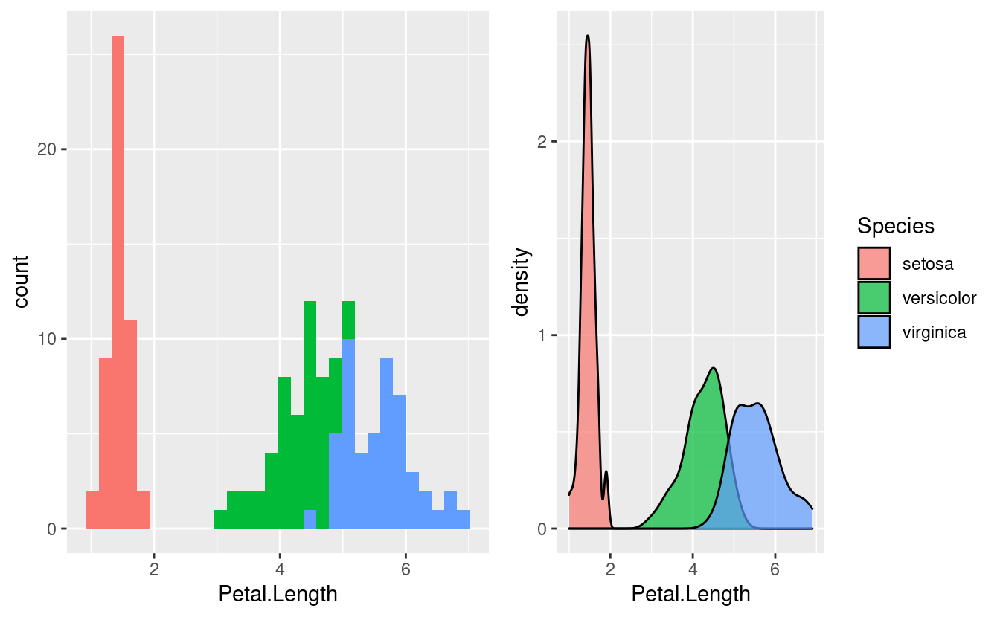

6.1 Ambas variables contínuas
Tiene una gramática propia y la idea original es que un gráfico puede ser elaborado a partir de la combinación de capas, pudiendo tener éstas diferentes bases de datos y objetos gráficos (puntos, líneas, barras, etc).

Agregaremos una a una las capas mencionadas en la figura. Éstas no tienen un orden estricto, salvo la primera que debe ser ggplot() que es la función que inicializa un gráfico. A ésta estarán asociados el dataframe principal (ya que un mismo gráfico acepta tomar información de distintos datasets), y las aesthetics que pueden ser seteadas globalmente para todo el gráfico o específicamente para cada nueva capa.
- aesthetics
Se definen con aes(). Significado de aesthetic en ggplot: “Algo que se puede ver”. Cada geom acepta un conjunto de aesthetics. Ejemplos: + position (i.e., en el eje “x” e “y”) color (color “exterior”) fill (color “interior”) shape (de los puntos) linetype size

- geoms
Objetos geométricos. Son la representación visual de las observaciones. En general los que le dan el nombre al tipo de gráfico. La lista de “geoms” aumenta día a día.


iris %>%
ggplot(aes(x=Sepal.Length, y=Petal.Length)) +
geom_point(aes(color = Species))+
geom_smooth()
iris %>%
ggplot(aes(x = Sepal.Length, y = Petal.Length,
color = Species)) +
geom_point()+
geom_smooth()
- facets
Las facetas o “facets” permiten dividir el mismo gráfico en múltiples paneles asociados a los niveles de un factor.
p <- iris %>%
ggplot(aes(x = Sepal.Length, y = Petal.Length)) +
geom_point()+
geom_smooth(method = "lm")+
facet_wrap(~Species)
p
- theme
Los temas (theme) son un conjunto de opciones predefinidas sobre la apariencia de los objetos en ggplot. El tema por defecto del ggplot dibuja el gráfico sobre un fondo gris. Podemos cambiarlo a blanco y negro añadiendo el comando theme_bw().

Si deseamos explorar las distribuciones de las variables podemos optar por un histograma o por diagramas de densidad.
cowplot::plot_grid(
iris %>%
ggplot(aes(Petal.Length, fill=Species)) +
geom_histogram()+
guides(fill=FALSE)
,
iris %>%
ggplot(aes(Petal.Length, fill=Species)) +
geom_density(alpha=0.7)
,
align="h"
)